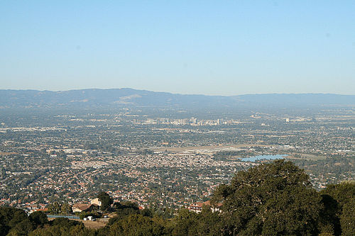
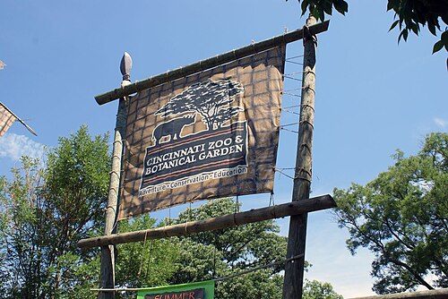

Born in Santa Clara County
California
I was born and spent my earliest years in Santa Clara County, in the heart of what would become Silicon Valley.
London · One year
Westminster, UK
My family moved to London when I was five. I spent a year there—where I learned to eat a burger with a fork and knife.
Mumbai
India
We moved to Mumbai when I was six. There I unlearned eating everything with a fork and knife. I did my schooling at Hiranandani Foundation School and Jamnabai Narsee School.

Cincinnati, Ohio
USA
I moved to Cincinnati, Ohio for college—where I studied Computer Science and began building the path that led to product, DevOps, and eventually back to the Bay Area.
Product Manager & Advisory Board · Oodles
Cupertino, CA
Restaurant discounting app—aligned C-suite business goals with technical milestones. Built PM pipelines with agile practices for test, release, and lean development; tracked KPIs for product growth and strategy.
Company dissolved.
DevOps Engineer & Technical PM · Qventus
Mountain View, CA
Managed secure AWS infrastructure and Agile workflows; saved $800K monthly. DevSecOps, Docker, Ansible, Terraform. Scrum Master; operationalized guild initiatives and cross-team healthcare infrastructure projects.
Founder & CEO · Sudokra Inc.
Albany, CA
Media automation with AI at scale. Enterprise accounts including The Hacksmith (YouTube); video localization SaaS—30+ languages, 30+ social channels. Automated media (RTCL TV, BKWTCH)—100 original videos weekly.
Company dissolved.
Co-founder & CIO · MindLight Technology
Mountain View, CA
Led technical operations; secured $500K pre-seed from UpScaleX. Architected end-to-end AI system for 2×–4× ROAS via Meta Ads analysis. Engineered deep-integration software for Meta's data ecosystem; scaled distributed technical team.
Company dissolved.
Education
BS Computer Science · University of Cincinnati (2016)
Cincinnati, OH
MBA · University of San Francisco (2026)
San Francisco, CA
Get the full story
See Experience and About for the complete timeline and details.